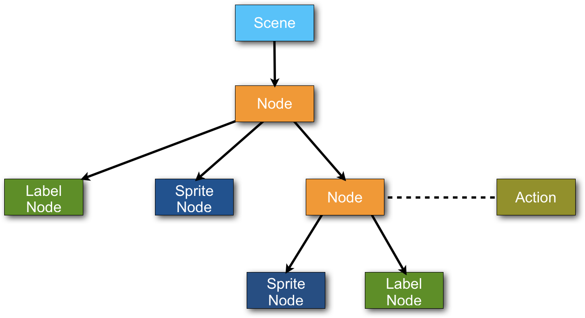
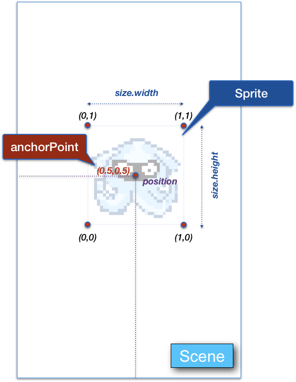

Fundamentos de los motores¶
En esta sección vamos a empezar estudiando una serie de conceptos que serán comunes a la mayoría de motores. Una vez conocidos estos conceptos, nos será sencillo aprender a utilizar los diferentes motores existentes, ya que cuentan con librerías muy similares.
Escenas¶
El primer componente que nos vamos a encontrar en el motor del videojuego es la escena. Dentro de nuestro videojuego podremos definir varias escenas y transiciones entre ellas. Estas escenas representarán las diferentes "pantallas" que componen nuestro videojuego, como podrían ser por ejemplo:
- Menú principal
- Pantalla donde se desarrolla el juego
- Pantalla de Game Over
- Pantalla de introducción de nuestro nombre
- Pantalla con las puntuaciones máximas
- Créditos
Transiciones entre escenas¶
Podremos realizar transiciones entre dichas pantallas. Por ejemplo, cuando en el menú principal pulsemos sobre el botón Play iremos a la pantalla del juego, y cuando nos maten iremos a game over. El motor nos dará facilidades para hacer la transición entre escenas, permitiendo normalmente que la transición se haga mediante alguna animación (fundido, volteado de la pantalla, etc).
De esta forma, podemos ver estas pantallas y las transiciones entre ellas como una máquina de estados.

Según la escena en la que nos encontremos (escena activa), el contenido que se muestre en pantalla y su comportamiento serán distintos.
Ciclo del juego¶
La escena que esté activa en un momento dado será la que se ejecute en lo que se conoce como el ciclo del juego. Este ciclo es un bucle que el motor ejecuta a una determinada tasa de iteraciones por segundo, habitualmente a 60 fps (fotogramas por segundo).
Esta tasa debería ser fija, y con un valor que el dispositivo pueda soportar de forma estable. Si nuestro juego fuese muy complejo, podríamos por ejemplo plantearnos bajarla a 30 fps. Debemos evitar que el juego sufra caídas considerables de esta tasa debido a la complejidad del contenido de la escena, ya que causará una mala experiencia para el usuario.
En cada iteración el motor utilizará la escena activa para realizar dos tareas:
- Update: Se actualiza el contenido de la escena. Esta tarea deberemos programarla nosotros, ya que es donde definiremos el comportamiento de la escena. Habitualmente se realizan las siguientes acciones:
- Leemos la entrada del usuario (mandos, teclas, pantalla táctil, ...). Normalmente el motor nos facilitará la obtención de la lectura de la entrada.
- Actualizamos la posición de nuestro personaje, enemigos y otros elementos.
- Comprobamos las interacciones entre las entidades del juego y realizamos las acciones oportunas (por ejemplo, si una bala toca un enemigo, matamos al enemigo).
- Render: Dibuja en pantalla el contenido de la escena en el estado en el que se encuentre actualmente. De esto normalmente se encargará el motor. Nosotros simplemente actualizaremos la posición y otras propiedades de los diferentes elementos de la escena, y el motor se encargará de dibujar todo el contenido en el estado en el que lo hayamos dejado.
A continuación veremos cómo se organiza el contenido de la escena.
Árbol de la escena¶
El contenido de la escena se compone de una serie de nodos organizados de forma jerárquica. Esto es lo que se conoce como árbol de la escena. Normalmente tendremos una clase Node que definirá los nodos que pueden formar parte del árbol, y de la que derivan diferentes subclases para determinados tipos especializados de nodos. Los más comunes son:
Scene: La propia escena habitualmente es un tipo de nodo más, que siempre será la raíz del árbol.Node: La clase base de los nodos, además de ser utilizada para heredar de ella y crear tipos especializados de nodos, se utiliza habitualmente también como nodo vacío en el árbol que nos permita agrupar otros nodos dentro de él. De esta forma, podremos tratar dicho grupo de nodos de forma conjunta, como por ejemplo para moverlos en bloque.LabelNode: Nos permite introducir etiquetas de texto en la escena. Esto resulta de gran utilidad por ejemplo en el menú, o para los marcadores dentro del juego.SpriteNode: Los sprites son uno de los elementos más utilizados en los videojuegos 2D. Se trata de una imagen que ubicaremos en un determinado lugar de la escena, y que utilizaremos normalmente para mostrar objetos o personajes que pueden moverse por la escena y/o con los que podemos interactuar. En muchas ocasiones, en lugar de mostrar una imagen fija mostrarán una animación por fotogramas (por ejemplo para el ciclo de andar de un personaje)TilemapNode: Se trata de un nodo que nos facilitará crear mapeados extensos para nuestra escena. Existen herramientas, como Tiled, que nos permiten crear mapas con este formato, a partir de un conjunto de piezas (tiles) con las que compondremos el mapa.
En el siguiente gráfico podemos ver un ejemplo de lo que podría ser un árbol de la escena de un videojuego 2D.

Dependiendo del motor que utilicemos, encontraremos tipos adicionales de nodos que podremos incluir en la escena, e incluso podremos definir nuestros propios tipos de nodos especializados en caso necesario.
En el caso de videojuegos 3D, tendremos también un árbol de la escena, aunque en tal caso los nodos que encontraremos representarán habitualmente formas geométricas, mallas 3D, luces o cámaras.
Propiedades de los nodos¶
Todos los nodos de la escena comparten una serie de propiedades (todas ellas heredadas de Node). Vamos a ver a continuación las propiedades que utilizaremos de forma habitual.
| Grupo | Propiedad | Descripción |
|---|---|---|
| Identificación | name |
Nos permite buscar el nodo en la escena |
| Posicionamiento | position |
Coordenadas del nodo dentro del sistema de coordenadas de su nodo padre |
anchorPoint |
Punto del nodo que se ubicará en sus coordenadas. Tomará valores entre (0,0), que representa su esquina inferior izquierda, y (1,1), que representa su esquina superior derecha. A continuación se muestra una figura ilustrativa sobre el uso de esta propiedad |
|
| Transformación | rotation |
Permite rotar el nodo indicando un ángulo |
scale |
Permite escalar el nodo. Habitualmente se puede también escalar el nodo únicamente en uno de sus ejes (x o y) | |
| Visibilidad | alpha |
Nos permite indicar la opacidad del nodo, tomando valores desde 0 (transparente) hasta 1 (opaco) |
hidden |
Nos permite ocultar totalmente el nodo (no se renderizará, ahorrando el correspondiente tiempo de procesamiento) | |
| Tamaño | size |
Tamaño del área rectangular que ocupa el nodo en la escena. Dada la posición y esta propiedad, podremos saber la región en la escena que ocupa exactamente el nodo, permitiendo de esta forma comprobar si dos nodos están en contacto, o bien si estamos tocando sobre alguno de los nodos |
| Orden | z |
Establece el orden z, es decir, qué nodos se dibujan delante de otros. En la próxima sección hablaremos en mayor detalle sobre esta propiedad. |

Capas y orden Z¶
El orden en el que se dibujarán los nodos en pantalla es lo que se conoce como orden Z, que indica la profundidad de cada nodo en la escena. Cuando mayor sea Z, más delante estará el nodo (tapará a los nodos con menor Z).
Dicho orden Z determina el orden en el que se dibujarán los nodos hermanos. Los hermanos con menor Z se dibujarán antes, y por lo tanto serán tapados por los hermanos con mayor Z.
Para dibujar cada hermano, se dibujará el propio nodo, y en caso de tener hijos, se dibujarán siguiendo el orden Z establecido entre ellos, y así recursivamente. Es decir, el árbol se recorre en preorden para su dibujado.
De esta forma, podemos ver cada nodo como una capa compuesta por el nodo y todos sus hijos, cuyo orden Z determinará si queda por delante o por detrás de sus hermanos.
Es importante destacar también que el orden Z es una propiedad local entre los hijos de cada nodo. Algunos motores nos permiten también calcular un orden Z global a partir de la estructura del árbol.
Añadiendo y eliminando nodos de la escena¶
La escena en ocasiones la podremos construir mediante un editor visual, o bien de forma programada. En cualquier caso, deberemos organizar los nodos de forma jerárquica. Para manipular dicha jerarquía (añadir o eliminar nodos), contaremos con los siguientes métodos de los nodos:
| Función | Método |
|---|---|
| Añadir nodos | nodoPadre.addChild(nodoHijo) |
| Eliminar un nodo | nodoHijo.removeFromParent() |
Podemos observar que cuando queramos añadir un nuevo nodo, deberemos hacerlo sobre el nodo que será su padre, para indicar en qué lugar de la jerarquía estará.
Sin embargo, para eliminarlo bastará con indica que lo elimine de quien sea su padre, sin necesidad de especificarlo. De esta forma se eliminará el nodo de la jerarquía, y por lo tanto la escena dejará de actualizarlo y de renderizarlo.
Además, normalmente los motores nos proporcionarán métodos adicionales para:
- Buscar un nodo en la jerarquía a partir de su nombre. Especialmente necesario cuando hemos diseñado la escena mediante un editor visual y queremos manipularla desde el código.
- Consultar la lista de hijos de un nodo.
- Reordenar los nodos del árbol.